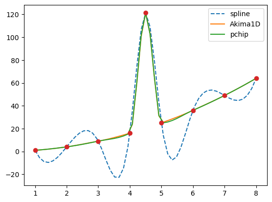
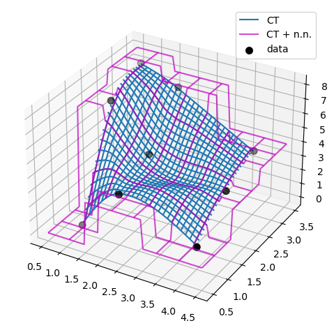
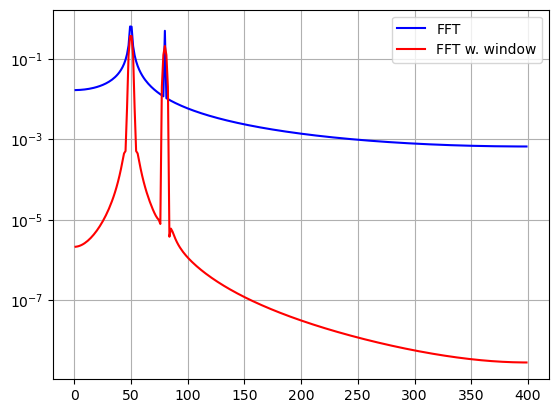

!pip list | grep scipyscipy 1.12.0!pip list | grep scipyscipy 1.12.0import numpy as np
x = np.linspace(0, 10, num=11)
y = np.cos(-x**2 / 9.0)xnew = np.linspace(0, 10, num=1001)
ynew = np.interp(xnew, x, y)import matplotlib.pyplot as plt
plt.plot(xnew, ynew, '-', label='linear interp')
plt.plot(x, y, 'o', label='data')
plt.legend(loc='best')
plt.show()from scipy.interpolate import CubicSpline
spl = CubicSpline([1, 2, 3, 4, 5, 6], [1, 4, 8, 16, 25, 36])
spl(2.5)array(5.57083333)from scipy.interpolate import CubicSpline
x = np.linspace(0, 10, num=11)
y = np.cos(-x**2 / 9.)
spl = CubicSpline(x, y)import matplotlib.pyplot as plt
fig, ax = plt.subplots(4, 1, figsize=(5, 7))
xnew = np.linspace(0, 10, num=1001)
ax[0].plot(xnew, spl(xnew))
ax[0].plot(x, y, 'o', label='data')
ax[1].plot(xnew, spl(xnew, nu=1), '--', label='1st derivative')
ax[2].plot(xnew, spl(xnew, nu=2), '--', label='2nd derivative')
ax[3].plot(xnew, spl(xnew, nu=3), '--', label='3rd derivative')
for j in range(4):
ax[j].legend(loc='best')
plt.tight_layout()
plt.show()
from scipy.interpolate import CubicSpline, PchipInterpolator, Akima1DInterpolator
x = np.array([1., 2., 3., 4., 4.5, 5., 6., 7., 8])
y = x**2
y[4] += 101import matplotlib.pyplot as plt
xx = np.linspace(1, 8, 51)
plt.plot(xx, CubicSpline(x, y)(xx), '--', label='spline')
plt.plot(xx, Akima1DInterpolator(x, y)(xx), '-', label='Akima1D')
plt.plot(xx, PchipInterpolator(x, y)(xx), '-', label='pchip')
plt.plot(x, y, 'o')
plt.legend()
plt.show()
x = np.linspace(0, 3/2, 7)
y = np.sin(np.pi*x)from scipy.interpolate import make_interp_spline
bspl = make_interp_spline(x, y, k=3)der = bspl.derivative() # a BSpline representing the derivative
import matplotlib.pyplot as plt
xx = np.linspace(0, 3/2, 51)
plt.plot(xx, bspl(xx), '--', label=r'$\sin(\pi x)$ approx')
plt.plot(x, y, 'o', label='data')
plt.plot(xx, der(xx)/np.pi, '--', label='$d \sin(\pi x)/dx / \pi$ approx')
plt.legend()
plt.show()bspl.k, der.k(3, 2)x = [0, 1, 2, 3, 4, 5, 6]
y = [0, 0, 0, 9, 0, 0, 0]
p = np.stack((x, y))
parray([[0, 1, 2, 3, 4, 5, 6],
[0, 0, 0, 9, 0, 0, 0]])u_unif = xdp = p[:, 1:] - p[:, :-1] # 2-vector distances between points
l = (dp**2).sum(axis=0) # squares of lengths of 2-vectors between points
u_cord = np.sqrt(l).cumsum() # cumulative sums of 2-norms
u_cord = np.r_[0, u_cord] # the first point is parameterized at zerou_c = np.r_[0, np.cumsum((dp**2).sum(axis=0)**0.25)]from scipy.interpolate import make_interp_spline
import matplotlib.pyplot as plt
fig, ax = plt.subplots(1, 3, figsize=(8, 3))
parametrizations = ['uniform', 'cord length', 'centripetal']
for j, u in enumerate([u_unif, u_cord, u_c]):
spl = make_interp_spline(u, p, axis=1) # note p is a 2D array
uu = np.linspace(u[0], u[-1], 51)
xx, yy = spl(uu)
ax[j].plot(xx, yy, '--')
ax[j].plot(p[0, :], p[1, :], 'o')
ax[j].set_title(parametrizations[j])
plt.show()from scipy.interpolate import CubicSpline
x = np.linspace(0, 10, 71)
y = np.sin(x)
spl = CubicSpline(x, y)dspl = spl.derivative()dspl(1.1), spl(1.1, nu=1)(array(0.45361436), array(0.45361436))dspl.roots() / np.piarray([-0.45480801, 0.50000034, 1.50000099, 2.5000016 , 3.46249993])dspl.roots(extrapolate=False) / np.piarray([0.50000034, 1.50000099, 2.5000016 ])dspl.solve(0.5, extrapolate=False) / np.piarray([0.33332755, 1.66667195, 2.3333271 ])from scipy.special import ellipk
m = 0.5
ellipk(m)1.8540746773013719from scipy.interpolate import PchipInterpolator
x = np.linspace(0, np.pi/2, 70)
y = (1 - m*np.sin(x)**2)**(-1/2)
spl = PchipInterpolator(x, y)spl.integrate(0, np.pi/2)array(1.85407467)from scipy.interpolate import PchipInterpolator
m = np.linspace(0, 0.9, 11)
x = np.linspace(0, np.pi/2, 70)
y = 1 / np.sqrt(1 - m[:, None]*np.sin(x)**2)spl = PchipInterpolator(x, y, axis=1) # the default is axis=0
import matplotlib.pyplot as plt
plt.plot(m, spl.integrate(0, np.pi/2), '--')from scipy.special import ellipk
plt.plot(m, ellipk(m), 'o')
plt.legend(['`ellipk`', 'integrated piecewise polynomial'])
plt.show()x = np.linspace(0, 3/2, 7)
y = np.sin(np.pi*x)
from scipy.interpolate import make_interp_spline
bspl = make_interp_spline(x, y, k=3)
print(bspl.t)[0. 0. 0. 0. 0.5 0.75 1. 1.5 1.5 1.5 1.5 ]print(x)[0. 0.25 0.5 0.75 1. 1.25 1.5 ]len(bspl.c)7k = 3 # cubic splines
t = [0., 1.4, 2., 3.1, 5.] # internal knots
t = np.r_[[0]*k, t, [5]*k] # add boundary knotsfrom scipy.interpolate import BSpline
import matplotlib.pyplot as plt
for j in [-2, -1, 0, 1, 2]:
a, b = t[k+j], t[-k+j-1]
xx = np.linspace(a, b, 101)
bspl = BSpline.basis_element(t[k+j:-k+j])
plt.plot(xx, bspl(xx), label=f'j = {j}')
plt.legend(loc='best')
plt.show()c = np.zeros(t.size - k - 1)
c[-2] = 1
b = BSpline(t, c, k)
np.allclose(b(xx), bspl(xx))Truet = [0., 0., 0., 0., 2., 3., 4., 6., 6., 6., 6.]xnew = [1, 2, 3]from scipy.interpolate import BSpline
mat = BSpline.design_matrix(xnew, t, k=3)
mat<3x7 sparse array of type '<class 'numpy.float64'>'
with 12 stored elements in Compressed Sparse Row format>with np.printoptions(precision=3):
print(mat.toarray())[[0.125 0.514 0.319 0.042 0. 0. 0. ]
[0. 0.111 0.556 0.333 0. 0. 0. ]
[0. 0. 0.125 0.75 0.125 0. 0. ]]import numpy as np
from scipy.interpolate import splrep, BSplinex = np.arange(0, 2*np.pi+np.pi/4, 2*np.pi/16)
rng = np.random.default_rng()
y = np.sin(x) + 0.4*rng.standard_normal(size=len(x))tck = splrep(x, y, s=0)
tck_s = splrep(x, y, s=len(x))import matplotlib.pyplot as plt
xnew = np.arange(0, 9/4, 1/50) * np.pi
plt.plot(xnew, np.sin(xnew), '-.', label='sin(x)')
plt.plot(xnew, BSpline(*tck)(xnew), '-', label='s=0')
plt.plot(xnew, BSpline(*tck_s)(xnew), '-', label=f's={len(x)}')
plt.plot(x, y, 'o')
plt.legend()
plt.show()import numpy as np
import matplotlib.pyplot as plt
from scipy import interpolatex = np.arange(0, 2*np.pi+np.pi/4, 2*np.pi/8)
y = np.sin(x)
tck = interpolate.splrep(x, y, s=0)
xnew = np.arange(0, 2*np.pi, np.pi/50)
ynew = interpolate.splev(xnew, tck, der=0)plt.figure()
plt.plot(x, y, 'x', xnew, ynew, xnew, np.sin(xnew), x, y, 'b')
plt.legend(['Linear', 'Cubic Spline', 'True'])
plt.axis([-0.05, 6.33, -1.05, 1.05])
plt.title('Cubic-spline interpolation')
plt.show()yder = interpolate.splev(xnew, tck, der=1) # or BSpline(*tck)(xnew, 1)
plt.figure()
plt.plot(xnew, yder, xnew, np.cos(xnew),'--')
plt.legend(['Cubic Spline', 'True'])
plt.axis([-0.05, 6.33, -1.05, 1.05])
plt.title('Derivative estimation from spline')
plt.show()yders = interpolate.spalde(xnew, tck)
plt.figure()
for i in range(len(yders[0])):
plt.plot(xnew, [d[i] for d in yders], '--', label=f"{i} derivative")
plt.legend()
plt.axis([-0.05, 6.33, -1.05, 1.05])
plt.title('All derivatives of a B-spline')
plt.show()def integ(x, tck, constant=-1):
x = np.atleast_1d(x)
out = np.zeros(x.shape, dtype=x.dtype)
for n in range(len(out)):
out[n] = interpolate.splint(0, x[n], tck)
out += constant
return outyint = integ(xnew, tck)
plt.figure()
plt.plot(xnew, yint, xnew, -np.cos(xnew), '--')
plt.legend(['Cubic Spline', 'True'])
plt.axis([-0.05, 6.33, -1.05, 1.05])
plt.title('Integral estimation from spline')
plt.show()interpolate.sproot(tck)array([3.14159265])x = np.linspace(-np.pi/4, 2.*np.pi + np.pi/4, 21)
y = np.sin(x)
tck = interpolate.splrep(x, y, s=0)
interpolate.sproot(tck)array([-2.22044605e-16, 3.14159265e+00, 6.28318531e+00])t = np.arange(0, 1.1, .1)
x = np.sin(2*np.pi*t)
y = np.cos(2*np.pi*t)
tck, u = interpolate.splprep([x, y], s=0)
unew = np.arange(0, 1.01, 0.01)
out = interpolate.splev(unew, tck)
plt.figure()
plt.plot(x, y, 'x', out[0], out[1], np.sin(2*np.pi*unew), np.cos(2*np.pi*unew), x, y, 'b')
plt.legend(['Linear', 'Cubic Spline', 'True'])
plt.axis([-1.05, 1.05, -1.05, 1.05])
plt.title('Spline of parametrically-defined curve')
plt.show()tt, cc, k = tck
cc = np.array(cc)
bspl = BSpline(tt, cc.T, k) # note the transpose
xy = bspl(u)
xx, yy = xy.T # transpose to unpack into a pair of arrays
np.allclose(x, xx)Truenp.allclose(y, yy)Trueimport numpy as np
import matplotlib.pyplot as plt
from scipy import interpolatex = np.arange(0, 2*np.pi+np.pi/4, 2*np.pi/8)
y = np.sin(x)
s = interpolate.InterpolatedUnivariateSpline(x, y)
xnew = np.arange(0, 2*np.pi, np.pi/50)
ynew = s(xnew)plt.figure()
plt.plot(x, y, 'x', xnew, ynew, xnew, np.sin(xnew), x, y, 'b')
plt.legend(['Linear', 'InterpolatedUnivariateSpline', 'True'])
plt.axis([-0.05, 6.33, -1.05, 1.05])
plt.title('InterpolatedUnivariateSpline')
plt.show()t = [np.pi/2-.1, np.pi/2+.1, 3*np.pi/2-.1, 3*np.pi/2+.1]
s = interpolate.LSQUnivariateSpline(x, y, t, k=2)
ynew = s(xnew)plt.figure()
plt.plot(x, y, 'x', xnew, ynew, xnew, np.sin(xnew), x, y, 'b')
plt.legend(['Linear', 'LSQUnivariateSpline', 'True'])
plt.axis([-0.05, 6.33, -1.05, 1.05])
plt.title('Spline with Specified Interior Knots')
plt.show()x_edges, y_edges = np.mgrid[-1:1:21j, -1:1:21j]
x = x_edges[:-1, :-1] + np.diff(x_edges[:2, 0])[0] / 2.
y = y_edges[:-1, :-1] + np.diff(y_edges[0, :2])[0] / 2.
z = (x+y) * np.exp(-6.0*(x*x+y*y))plt.figure()
lims = dict(cmap='RdBu_r', vmin=-0.25, vmax=0.25)
plt.pcolormesh(x_edges, y_edges, z, shading='flat', **lims)
plt.colorbar()
plt.title("Sparsely sampled function.")
plt.show()xnew_edges, ynew_edges = np.mgrid[-1:1:71j, -1:1:71j]
xnew = xnew_edges[:-1, :-1] + np.diff(xnew_edges[:2, 0])[0] / 2.
ynew = ynew_edges[:-1, :-1] + np.diff(ynew_edges[0, :2])[0] / 2.
tck = interpolate.bisplrep(x, y, z, s=0)
znew = interpolate.bisplev(xnew[:,0], ynew[0,:], tck)plt.figure()
plt.pcolormesh(xnew_edges, ynew_edges, znew, shading='flat', **lims)
plt.colorbar()
plt.title("Interpolated function.")
plt.show()import numpy as np
import matplotlib.pyplot as plt
from scipy.interpolate import SmoothBivariateSpline
import warnings
warnings.simplefilter('ignore')
train_x, train_y = np.meshgrid(np.arange(-5, 5, 0.5), np.arange(-5, 5, 0.5))
train_x = train_x.flatten()
train_y = train_y.flatten()
def z_func(x, y):
return np.cos(x) + np.sin(y) ** 2 + 0.05 * x + 0.1 * y
train_z = z_func(train_x, train_y)
interp_func = SmoothBivariateSpline(train_x, train_y, train_z, s=0.0)
smth_func = SmoothBivariateSpline(train_x, train_y, train_z)
test_x = np.arange(-9, 9, 0.01)
test_y = np.arange(-9, 9, 0.01)
grid_x, grid_y = np.meshgrid(test_x, test_y)
interp_result = interp_func(test_x, test_y).T
smth_result = smth_func(test_x, test_y).T
perfect_result = z_func(grid_x, grid_y)
fig, axes = plt.subplots(1, 3, figsize=(16, 8))
extent = [test_x[0], test_x[-1], test_y[0], test_y[-1]]
opts = dict(aspect='equal', cmap='nipy_spectral', extent=extent, vmin=-1.5, vmax=2.5)
im = axes[0].imshow(perfect_result, **opts)
fig.colorbar(im, ax=axes[0], orientation='horizontal')
axes[0].plot(train_x, train_y, 'w.')
axes[0].set_title('Perfect result, sampled function', fontsize=21)
im = axes[1].imshow(smth_result, **opts)
axes[1].plot(train_x, train_y, 'w.')
fig.colorbar(im, ax=axes[1], orientation='horizontal')
axes[1].set_title('s=default', fontsize=21)
im = axes[2].imshow(interp_result, **opts)
fig.colorbar(im, ax=axes[2], orientation='horizontal')
axes[2].plot(train_x, train_y, 'w.')
axes[2].set_title('s=0', fontsize=21)
plt.tight_layout()
plt.show()import numpy as np
import matplotlib.pyplot as plt
from scipy.interpolate import RectBivariateSpline
x = np.arange(-5.01, 5.01, 0.25) # the grid is an outer product
y = np.arange(-5.01, 7.51, 0.25) # of x and y arrays
xx, yy = np.meshgrid(x, y, indexing='ij')
z = np.sin(xx**2 + 2.*yy**2) # z array needs to be 2-D
func = RectBivariateSpline(x, y, z, s=0)
xnew = np.arange(-5.01, 5.01, 1e-2)
ynew = np.arange(-5.01, 7.51, 1e-2)
znew = func(xnew, ynew)
plt.imshow(znew)
plt.colorbar()
plt.show()
import matplotlib.pyplot as plt
from scipy.interpolate import RegularGridInterpolatordef F(u, v):
return u * np.cos(u * v) + v * np.sin(u * v)fit_points = [np.linspace(0, 3, 8), np.linspace(0, 3, 11)]
values = F(*np.meshgrid(*fit_points, indexing='ij'))ut, vt = np.meshgrid(np.linspace(0, 3, 80), np.linspace(0, 3, 80), indexing='ij')
true_values = F(ut, vt)
test_points = np.array([ut.ravel(), vt.ravel()]).Tinterp = RegularGridInterpolator(fit_points, values)
fig, axes = plt.subplots(2, 3, figsize=(10, 6))
axes = axes.ravel()
fig_index = 0
for method in ['linear', 'nearest', 'slinear', 'cubic', 'quintic']:
im = interp(test_points, method=method).reshape(80, 80)
axes[fig_index].imshow(im)
axes[fig_index].set_title(method)
axes[fig_index].axis("off")
fig_index += 1
axes[fig_index].imshow(true_values)
axes[fig_index].set_title("True values")
fig.tight_layout()
fig.show()from scipy.interpolate import interpn
rgi = RegularGridInterpolator(fit_points, values)
result_rgi = rgi(test_points)result_interpn = interpn(fit_points, values, test_points)
np.allclose(result_rgi, result_interpn, atol=1e-15)Truex = np.array([0, 5, 10])
y = np.array([0])
data = np.array([[0], [5], [10]])
rgi = RegularGridInterpolator((x, y), data,
bounds_error=False, fill_value=None)
rgi([(2, 0), (2, 1), (2, -1)])array([2., 2., 2.])rgi.fill_value = -101
rgi([(2, 0), (2, 1), (2, -1)])array([ 2., -101., -101.])class CartesianGridInterpolator:
def __init__(self, points, values, method='linear'):
self.limits = np.array([[min(x), max(x)] for x in points])
self.values = np.asarray(values, dtype=float)
self.order = {'linear': 1, 'cubic': 3, 'quintic': 5}[method]
def __call__(self, xi):
"""
`xi` here is an array-like (an array or a list) of points.
Each "point" is an ndim-dimensional array_like, representing
the coordinates of a point in ndim-dimensional space.
"""
# transpose the xi array into the ``map_coordinates`` convention
# which takes coordinates of a point along columns of a 2D array.
xi = np.asarray(xi).T
# convert from data coordinates to pixel coordinates
ns = self.values.shape
coords = [(n-1)*(val - lo) / (hi - lo)
for val, n, (lo, hi) in zip(xi, ns, self.limits)]
# interpolate
return map_coordinates(self.values, coords,
order=self.order,
cval=np.nan) # fill_valuex, y = np.arange(5), np.arange(6)
xx, yy = np.meshgrid(x, y, indexing='ij')
values = xx**3 + yy**3
rgi = RegularGridInterpolator((x, y), values, method='linear')
rgi([[1.5, 1.5], [3.5, 2.6]])array([ 9. , 64.9])cgi = CartesianGridInterpolator((x, y), values, method='linear')def func(x, y):
return x*(1-x)*np.cos(4*np.pi*x) * np.sin(4*np.pi*y**2)**2grid_x, grid_y = np.meshgrid(np.linspace(0, 1, 100),
np.linspace(0, 1, 200), indexing='ij')rng = np.random.default_rng()
points = rng.random((1000, 2))
values = func(points[:,0], points[:,1])from scipy.interpolate import griddata
grid_z0 = griddata(points, values, (grid_x, grid_y), method='nearest')
grid_z1 = griddata(points, values, (grid_x, grid_y), method='linear')
grid_z2 = griddata(points, values, (grid_x, grid_y), method='cubic')import matplotlib.pyplot as plt
plt.subplot(221)
plt.imshow(func(grid_x, grid_y).T, extent=(0, 1, 0, 1), origin='lower')
plt.plot(points[:, 0], points[:, 1], 'k.', ms=1) # data
plt.title('Original')
plt.subplot(222)
plt.imshow(grid_z0.T, extent=(0, 1, 0, 1), origin='lower')
plt.title('Nearest')
plt.subplot(223)
plt.imshow(grid_z1.T, extent=(0, 1, 0, 1), origin='lower')
plt.title('Linear')
plt.subplot(224)
plt.imshow(grid_z2.T, extent=(0, 1, 0, 1), origin='lower')
plt.title('Cubic')
plt.gcf().set_size_inches(6, 6)
plt.show()import numpy as np
from scipy.interpolate import RBFInterpolator, InterpolatedUnivariateSpline
import matplotlib.pyplot as plt# setup data
x = np.linspace(0, 10, 9).reshape(-1, 1)
y = np.sin(x)
xi = np.linspace(0, 10, 101).reshape(-1, 1)
# use fitpack2 method
ius = InterpolatedUnivariateSpline(x, y)
yi = ius(xi)
plt.subplot(2, 1, 1)
plt.plot(x, y, 'bo')
plt.plot(xi, yi, 'g')
plt.plot(xi, np.sin(xi), 'r')
plt.title('Interpolation using univariate spline')
# use RBF method
rbf = RBFInterpolator(x, y)
fi = rbf(xi)
plt.subplot(2, 1, 2)
plt.plot(x, y, 'bo')
plt.plot(xi, fi, 'g')
plt.plot(xi, np.sin(xi), 'r')
plt.title('Interpolation using RBF - multiquadrics')
plt.show()import numpy as np
from scipy.interpolate import RBFInterpolator
import matplotlib.pyplot as plt
# 2-d tests - setup scattered data
rng = np.random.default_rng()
xy = rng.random((100, 2))*4.0-2.0
z = xy[:, 0]*np.exp(-xy[:, 0]**2-xy[:, 1]**2)
edges = np.linspace(-2.0, 2.0, 101)
centers = edges[:-1] + np.diff(edges[:2])[0] / 2.
x_i, y_i = np.meshgrid(centers, centers)
x_i = x_i.reshape(-1, 1)
y_i = y_i.reshape(-1, 1)
xy_i = np.concatenate([x_i, y_i], axis=1)
# use RBF
rbf = RBFInterpolator(xy, z, epsilon=2)
z_i = rbf(xy_i)
# plot the result
fig, ax = plt.subplots()
X_edges, Y_edges = np.meshgrid(edges, edges)
lims = dict(cmap='RdBu_r', vmin=-0.4, vmax=0.4)
mapping = ax.pcolormesh(
X_edges, Y_edges, z_i.reshape(100, 100),
shading='flat', **lims
)
ax.scatter(xy[:, 0], xy[:, 1], 100, z, edgecolor='w', lw=0.1, **lims)
ax.set(
title='RBF interpolation - multiquadrics',
xlim=(-2, 2),
ylim=(-2, 2),
)
fig.colorbar(mapping)import numpy as np
import matplotlib.pyplot as plt
from scipy.interpolate import interp1d
x = np.linspace(0, 1.5*np.pi, 11)
y = np.column_stack((np.cos(x), np.sin(x))) # y.shape is (11, 2)
func = interp1d(x, y,
axis=0, # interpolate along columns
bounds_error=False,
kind='linear',
fill_value=(y[0], y[-1]))
xnew = np.linspace(-np.pi, 2.5*np.pi, 51)
ynew = func(xnew)
fix, (ax1, ax2) = plt.subplots(1, 2, figsize=(8, 4))
ax1.plot(xnew, ynew[:, 0])
ax1.plot(x, y[:, 0], 'o')
ax2.plot(xnew, ynew[:, 1])
ax2.plot(x, y[:, 1], 'o')
plt.tight_layout()import numpy as np
import matplotlib.pyplot as plt
from scipy.interpolate import CubicSpline
xs = [1, 2, 3, 4, 5, 6, 7, 8]
ys = [4.5, 3.6, 1.6, 0.0, -3.3, -3.1, -1.8, -1.7]
notaknot = CubicSpline(xs, ys, bc_type='not-a-knot')
natural = CubicSpline(xs, ys, bc_type='natural')
clamped = CubicSpline(xs, ys, bc_type='clamped')
xnew = np.linspace(min(xs) - 4, max(xs) + 4, 101)
splines = [notaknot, natural, clamped]
titles = ['not-a-knot', 'natural', 'clamped']
fig, axs = plt.subplots(3, 3, figsize=(12, 12))
for i in [0, 1, 2]:
for j, spline, title in zip(range(3), splines, titles):
axs[i, j].plot(xs, spline(xs, nu=i),'o')
axs[i, j].plot(xnew, spline(xnew, nu=i),'-')
axs[i, j].set_title(f'{title}, deriv={i}')
plt.tight_layout()
plt.show()import numpy as np
import matplotlib.pyplot as plt
from scipy.interpolate import CubicSpline
def add_boundary_knots(spline):
"""
Add knots infinitesimally to the left and right.
Additional intervals are added to have zero 2nd and 3rd derivatives,
and to maintain the first derivative from whatever boundary condition
was selected. The spline is modified in place.
"""
# determine the slope at the left edge
leftx = spline.x[0]
lefty = spline(leftx)
leftslope = spline(leftx, nu=1)
# add a new breakpoint just to the left and use the
# known slope to construct the PPoly coefficients.
leftxnext = np.nextafter(leftx, leftx - 1)
leftynext = lefty + leftslope*(leftxnext - leftx)
leftcoeffs = np.array([0, 0, leftslope, leftynext])
spline.extend(leftcoeffs[..., None], np.r_[leftxnext])
# repeat with additional knots to the right
rightx = spline.x[-1]
righty = spline(rightx)
rightslope = spline(rightx,nu=1)
rightxnext = np.nextafter(rightx, rightx + 1)
rightynext = righty + rightslope * (rightxnext - rightx)
rightcoeffs = np.array([0, 0, rightslope, rightynext])
spline.extend(rightcoeffs[..., None], np.r_[rightxnext])
xs = [1, 2, 3, 4, 5, 6, 7, 8]
ys = [4.5, 3.6, 1.6, 0.0, -3.3, -3.1, -1.8, -1.7]
notaknot = CubicSpline(xs,ys, bc_type='not-a-knot')
# not-a-knot does not require additional intervals
natural = CubicSpline(xs,ys, bc_type='natural')
# extend the natural natural spline with linear extrapolating knots
add_boundary_knots(natural)
clamped = CubicSpline(xs,ys, bc_type='clamped')
# extend the clamped spline with constant extrapolating knots
add_boundary_knots(clamped)
xnew = np.linspace(min(xs) - 5, max(xs) + 5, 201)
fig, axs = plt.subplots(3, 3,figsize=(12,12))
splines = [notaknot, natural, clamped]
titles = ['not-a-knot', 'natural', 'clamped']
for i in [0, 1, 2]:
for j, spline, title in zip(range(3), splines, titles):
axs[i, j].plot(xs, spline(xs, nu=i),'o')
axs[i, j].plot(xnew, spline(xnew, nu=i),'-')
axs[i, j].set_title(f'{title}, deriv={i}')
plt.tight_layout()
plt.show()
import numpy as np
import matplotlib.pyplot as plt
from scipy.optimize import brentq
def f(x, a):
return a*x - 1/np.tan(x)
a = 3
x0 = brentq(f, 1e-16, np.pi/2, args=(a,)) # here we shift the left edge
# by a machine epsilon to avoid
# a division by zero at x=0
xx = np.linspace(0.2, np.pi/2, 101)
plt.plot(xx, a*xx, '--')
plt.plot(xx, 1/np.tan(xx), '--')
plt.plot(x0, a*x0, 'o', ms=12)
plt.text(0.1, 0.9, fr'$x_0 = {x0:.3f}$',
transform=plt.gca().transAxes, fontsize=16)
plt.show()import numpy as np
import matplotlib.pyplot as plt
from scipy.interpolate import BPoly
def f(x, a):
return a*x - 1/np.tan(x)
xleft, xright = 0.2, np.pi/2
x = np.linspace(xleft, xright, 11)
fig, ax = plt.subplots(1, 2, figsize=(12, 4))
for j, a in enumerate([3, 93]):
y = f(x, a)
dydx = a + 1./np.sin(x)**2 # d(ax - 1/tan(x)) / dx
dxdy = 1 / dydx # dx/dy = 1 / (dy/dx)
xdx = np.c_[x, dxdy]
spl = BPoly.from_derivatives(y, xdx) # inverse interpolation
yy = np.linspace(f(xleft, a), f(xright, a), 51)
ax[j].plot(yy, spl(yy), '--')
ax[j].plot(y, x, 'o')
ax[j].set_xlabel(r'$y$')
ax[j].set_ylabel(r'$x$')
ax[j].set_title(rf'$a = {a}$')
ax[j].plot(0, spl(0), 'o', ms=12)
ax[j].text(0.1, 0.85, fr'$x_0 = {spl(0):.3f}$',
transform=ax[j].transAxes, fontsize=18)
ax[j].grid(True)
plt.tight_layout()
plt.show()class RootWithAsymptotics:
def __init__(self, a):
# construct the interpolant
xleft, xright = 0.2, np.pi/2
x = np.linspace(xleft, xright, 11)
y = f(x, a)
dydx = a + 1./np.sin(x)**2 # d(ax - 1/tan(x)) / dx
dxdy = 1 / dydx # dx/dy = 1 / (dy/dx)
# inverse interpolation
self.spl = BPoly.from_derivatives(y, np.c_[x, dxdy])
self.a = a
def root(self):
out = self.spl(0)
asympt = 1./np.sqrt(self.a)
return np.where(spl.x.min() < asympt, out, asympt)r = RootWithAsymptotics(93)
r.root()array(0.10369517)import numpy as np
import matplotlib.pyplot as plt
from scipy.interpolate import CloughTocher2DInterpolator as CT
def my_CT(xy, z):
"""CT interpolator + nearest-neighbor extrapolation.
Parameters
----------
xy : ndarray, shape (npoints, ndim)
Coordinates of data points
z : ndarray, shape (npoints)
Values at data points
Returns
-------
func : callable
A callable object which mirrors the CT behavior,
with an additional neareast-neighbor extrapolation
outside of the data range.
"""
x = xy[:, 0]
y = xy[:, 1]
f = CT(xy, z)
# this inner function will be returned to a user
def new_f(xx, yy):
# evaluate the CT interpolator. Out-of-bounds values are nan.
zz = f(xx, yy)
nans = np.isnan(zz)
if nans.any():
# for each nan point, find its nearest neighbor
inds = np.argmin(
(x[:, None] - xx[nans])**2 +
(y[:, None] - yy[nans])**2
, axis=0)
# ... and use its value
zz[nans] = z[inds]
return zz
return new_f
# Now illustrate the difference between the original ``CT`` interpolant
# and ``my_CT`` on a small example:
x = np.array([1, 1, 1, 2, 2, 2, 4, 4, 4])
y = np.array([1, 2, 3, 1, 2, 3, 1, 2, 3])
z = np.array([0, 7, 8, 3, 4, 7, 1, 3, 4])
xy = np.c_[x, y]
lut = CT(xy, z)
lut2 = my_CT(xy, z)
X = np.linspace(min(x) - 0.5, max(x) + 0.5, 71)
Y = np.linspace(min(y) - 0.5, max(y) + 0.5, 71)
X, Y = np.meshgrid(X, Y)
fig = plt.figure()
ax = fig.add_subplot(projection='3d')
ax.plot_wireframe(X, Y, lut(X, Y), label='CT')
ax.plot_wireframe(X, Y, lut2(X, Y), color='m',
cstride=10, rstride=10, alpha=0.7, label='CT + n.n.')
ax.scatter(x, y, z, 'o', color='k', s=48, label='data')
ax.legend()
plt.tight_layout()
from scipy.fft import fft, ifft
import numpy as np
x = np.array([1.0, 2.0, 1.0, -1.0, 1.5])
y = fft(x)
yarray([ 4.5 -0.j , 2.08155948-1.65109876j,
-1.83155948+1.60822041j, -1.83155948-1.60822041j,
2.08155948+1.65109876j])yinv = ifft(y)
yinvarray([ 1. +0.j, 2. +0.j, 1. +0.j, -1. +0.j, 1.5+0.j])np.sum(x)4.5from scipy.fft import fft, fftfreq
import numpy as np
# Number of sample points
N = 600
# sample spacing
T = 1.0 / 800.0
x = np.linspace(0.0, N*T, N, endpoint=False)
y = np.sin(50.0 * 2.0*np.pi*x) + 0.5*np.sin(80.0 * 2.0*np.pi*x)
yf = fft(y)
xf = fftfreq(N, T)[:N//2]
import matplotlib.pyplot as plt
plt.plot(xf, 2.0/N * np.abs(yf[0:N//2]))
plt.grid()
plt.show()from scipy.fft import fft, fftfreq
import numpy as np
# Number of sample points
N = 600
# sample spacing
T = 1.0 / 800.0
x = np.linspace(0.0, N*T, N, endpoint=False)
y = np.sin(50.0 * 2.0*np.pi*x) + 0.5*np.sin(80.0 * 2.0*np.pi*x)
yf = fft(y)
from scipy.signal.windows import blackman
w = blackman(N)
ywf = fft(y*w)
xf = fftfreq(N, T)[:N//2]
import matplotlib.pyplot as plt
plt.semilogy(xf[1:N//2], 2.0/N * np.abs(yf[1:N//2]), '-b')
plt.semilogy(xf[1:N//2], 2.0/N * np.abs(ywf[1:N//2]), '-r')
plt.legend(['FFT', 'FFT w. window'])
plt.grid()
from scipy.fft import fftshift
x = np.arange(8)
fftshift(x)
plt.show()
from scipy.fft import fftfreq
freq = fftfreq(8, 0.125)
freqarray([ 0., 1., 2., 3., -4., -3., -2., -1.])from scipy.fft import fftshift
x = np.arange(8)
fftshift(x)
from scipy.fft import fft, fftfreq, fftshift
import numpy as np
# number of signal points
N = 400
# sample spacing
T = 1.0 / 800.0
x = np.linspace(0.0, N*T, N, endpoint=False)
y = np.exp(50.0 * 1.j * 2.0*np.pi*x) + 0.5*np.exp(-80.0 * 1.j * 2.0*np.pi*x)
yf = fft(y)
xf = fftfreq(N, T)
xf = fftshift(xf)
yplot = fftshift(yf)
import matplotlib.pyplot as plt
plt.plot(xf, 1.0/N * np.abs(yplot))
plt.grid()
plt.show()from scipy.fft import fft, rfft, irfft
x = np.array([1.0, 2.0, 1.0, -1.0, 1.5, 1.0])
fft(x)array([ 5.5 -0.j , 2.25-0.4330127j , -2.75-1.29903811j,
1.5 -0.j , -2.75+1.29903811j, 2.25+0.4330127j ])yr = rfft(x)
yrarray([ 5.5 +0.j , 2.25-0.4330127j , -2.75-1.29903811j,
1.5 +0.j ])irfft(yr)array([ 1. , 2. , 1. , -1. , 1.5, 1. ])x = np.array([1.0, 2.0, 1.0, -1.0, 1.5])
fft(x)array([ 4.5 -0.j , 2.08155948-1.65109876j,
-1.83155948+1.60822041j, -1.83155948-1.60822041j,
2.08155948+1.65109876j])yr = rfft(x)
yrarray([ 4.5 +0.j , 2.08155948-1.65109876j,
-1.83155948+1.60822041j])irfft(yr)array([ 1.70788987, 2.40843925, -0.37366961, 0.75734049])irfft(yr, n=len(x))array([ 1. , 2. , 1. , -1. , 1.5])from scipy.fft import ifftn
import matplotlib.pyplot as plt
import matplotlib.cm as cm
import numpy as np
N = 30
f, ((ax1, ax2, ax3), (ax4, ax5, ax6)) = plt.subplots(2, 3, sharex='col', sharey='row')
xf = np.zeros((N,N))
xf[0, 5] = 1
xf[0, N-5] = 1
Z = ifftn(xf)
ax1.imshow(xf, cmap=cm.Reds)
ax4.imshow(np.real(Z), cmap=cm.gray)
xf = np.zeros((N, N))
xf[5, 0] = 1
xf[N-5, 0] = 1
Z = ifftn(xf)
ax2.imshow(xf, cmap=cm.Reds)
ax5.imshow(np.real(Z), cmap=cm.gray)
xf = np.zeros((N, N))
xf[5, 10] = 1
xf[N-5, N-10] = 1
Z = ifftn(xf)
ax3.imshow(xf, cmap=cm.Reds)
ax6.imshow(np.real(Z), cmap=cm.gray)
plt.show()
from scipy.fft import dct, idct
x = np.array([1.0, 2.0, 1.0, -1.0, 1.5])dct(dct(x, type=2, norm='ortho'), type=3, norm='ortho')array([ 1. , 2. , 1. , -1. , 1.5])dct(dct(x, type=2), type=3)array([ 10., 20., 10., -10., 15.])# Normalized inverse: no scaling factor
idct(dct(x, type=2), type=2)array([ 1. , 2. , 1. , -1. , 1.5])dct(dct(x, type=1, norm='ortho'), type=1, norm='ortho')array([ 1. , 2. , 1. , -1. , 1.5])# Unnormalized round-trip via DCT-I: scaling factor 2*(N-1) = 8
dct(dct(x, type=1), type=1)array([ 8., 16., 8., -8., 12.])# Normalized inverse: no scaling factor
idct(dct(x, type=1), type=1)array([ 1. , 2. , 1. , -1. , 1.5])dct(dct(x, type=4, norm='ortho'), type=4, norm='ortho')array([ 1. , 2. , 1. , -1. , 1.5])# Unnormalized round-trip via DCT-IV: scaling factor 2*N = 10
dct(dct(x, type=4), type=4)array([ 10., 20., 10., -10., 15.])# Normalized inverse: no scaling factor
idct(dct(x, type=4), type=4)array([ 1. , 2. , 1. , -1. , 1.5])from scipy.fft import dct, idct
import matplotlib.pyplot as plt
N = 100
t = np.linspace(0,20,N, endpoint=False)
x = np.exp(-t/3)*np.cos(2*t)
y = dct(x, norm='ortho')
window = np.zeros(N)
window[:20] = 1
yr = idct(y*window, norm='ortho')
sum(abs(x-yr)**2) / sum(abs(x)**2)0.0009872817275276098plt.plot(t, x, '-bx')
plt.plot(t, yr, 'ro')
window = np.zeros(N)
window[:15] = 1
yr = idct(y*window, norm='ortho')
sum(abs(x-yr)**2) / sum(abs(x)**2)
plt.plot(t, yr, 'g+')
plt.legend(['x', '$x_{20}$', '$x_{15}$'])
plt.grid()
plt.show()
from scipy.fft import dst, idst
x = np.array([1.0, 2.0, 1.0, -1.0, 1.5])dst(dst(x, type=2, norm='ortho'), type=3, norm='ortho')array([ 1. , 2. , 1. , -1. , 1.5])dst(dst(x, type=2), type=3)array([ 10., 20., 10., -10., 15.])idst(dst(x, type=2), type=2)array([ 1. , 2. , 1. , -1. , 1.5])dst(dst(x, type=1, norm='ortho'), type=1, norm='ortho')array([ 1. , 2. , 1. , -1. , 1.5])# scaling factor 2*(N+1) = 12
dst(dst(x, type=1), type=1)array([ 12., 24., 12., -12., 18.])# no scaling factor
idst(dst(x, type=1), type=1)array([ 1. , 2. , 1. , -1. , 1.5])dst(dst(x, type=4, norm='ortho'), type=4, norm='ortho')array([ 1. , 2. , 1. , -1. , 1.5])# scaling factor 2*N = 10
dst(dst(x, type=4), type=4)array([ 10., 20., 10., -10., 15.])# no scaling factor
idst(dst(x, type=4), type=4)array([ 1. , 2. , 1. , -1. , 1.5])import numpy as np
from scipy import signal, datasets
import matplotlib.pyplot as pltimage = datasets.face(gray=True).astype(np.float32)
derfilt = np.array([1.0, -2, 1.0], dtype=np.float32)
ck = signal.cspline2d(image, 8.0)
deriv = (signal.sepfir2d(ck, derfilt, [1]) +
signal.sepfir2d(ck, [1], derfilt))plt.figure()
plt.imshow(image)
plt.gray()
plt.title('Original image')
plt.show()
plt.figure()
plt.imshow(deriv)
plt.gray()
plt.title('Output of spline edge filter')
plt.show()x = np.array([1.0, 2.0, 3.0])
h = np.array([0.0, 1.0, 0.0, 0.0, 0.0])
signal.convolve(x, h)array([0., 1., 2., 3., 0., 0., 0.])signal.convolve(x, h, 'same')array([2., 3., 0.])x = np.array([[1., 1., 0., 0.], [1., 1., 0., 0.], [0., 0., 0., 0.], [0., 0., 0., 0.]])
h = np.array([[1., 0., 0., 0.], [0., 0., 0., 0.], [0., 0., 1., 0.], [0., 0., 0., 0.]])
signal.convolve(x, h)array([[1., 1., 0., 0., 0., 0., 0.],
[1., 1., 0., 0., 0., 0., 0.],
[0., 0., 1., 1., 0., 0., 0.],
[0., 0., 1., 1., 0., 0., 0.],
[0., 0., 0., 0., 0., 0., 0.],
[0., 0., 0., 0., 0., 0., 0.],
[0., 0., 0., 0., 0., 0., 0.]])import numpy as np
from scipy import signal, datasets
import matplotlib.pyplot as pltimage = datasets.face(gray=True)
w = np.zeros((50, 50))
w[0][0] = 1.0
w[49][25] = 1.0
image_new = signal.fftconvolve(image, w)plt.figure()
plt.imshow(image)
plt.gray()
plt.title('Original image')
plt.show()plt.figure()
plt.imshow(image_new)
plt.gray()
plt.title('Filtered image')
plt.show()import numpy as np
from scipy import signal, datasets
import matplotlib.pyplot as pltimage = np.asarray(datasets.ascent(), np.float64)
w = signal.windows.gaussian(51, 10.0)
image_new = signal.sepfir2d(image, w, w)plt.figure()
plt.imshow(image)
plt.gray()
plt.title('Original image')
plt.show()plt.figure()
plt.imshow(image_new)
plt.gray()
plt.title('Filtered image')
plt.show()import numpy as np
from scipy import signalx = np.array([1., 0., 0., 0.])
b = np.array([1.0/2, 1.0/4])
a = np.array([1.0, -1.0/3])
signal.lfilter(b, a, x)array([0.5 , 0.41666667, 0.13888889, 0.0462963 ])zi = signal.lfiltic(b, a, y=[2.])
signal.lfilter(b, a, x, zi=zi)(array([1.16666667, 0.63888889, 0.21296296, 0.07098765]), array([0.02366255]))b = np.array([1.0/2, 1.0/4])
a = np.array([1.0, -1.0/3])
signal.tf2zpk(b, a)(array([-0.5]), array([0.33333333]), 0.5)import numpy as np
import scipy.signal as signal
import matplotlib.pyplot as plt
b1 = signal.firwin(40, 0.5)
b2 = signal.firwin(41, [0.3, 0.8])
w1, h1 = signal.freqz(b1)
w2, h2 = signal.freqz(b2)
plt.title('Digital filter frequency response')
plt.plot(w1, 20*np.log10(np.abs(h1)), 'b')
plt.plot(w2, 20*np.log10(np.abs(h2)), 'r')
plt.ylabel('Amplitude Response (dB)')
plt.xlabel('Frequency (rad/sample)')
plt.grid()
plt.show()import numpy as np
import scipy.signal as signal
import matplotlib.pyplot as plt
b = signal.firwin2(150, [0.0, 0.3, 0.6, 1.0], [1.0, 2.0, 0.5, 0.0])
w, h = signal.freqz(b)
plt.title('Digital filter frequency response')
plt.plot(w, np.abs(h))
plt.title('Digital filter frequency response')
plt.ylabel('Amplitude Response')
plt.xlabel('Frequency (rad/sample)')
plt.grid()
plt.show()import numpy as np
import scipy.signal as signal
import matplotlib.pyplot as plt
b, a = signal.iirfilter(4, Wn=0.2, rp=5, rs=60, btype='lowpass', ftype='ellip')
w, h = signal.freqz(b, a)
plt.title('Digital filter frequency response')
plt.plot(w, 20*np.log10(np.abs(h)))
plt.title('Digital filter frequency response')
plt.ylabel('Amplitude Response [dB]')
plt.xlabel('Frequency (rad/sample)')
plt.grid()
plt.show()import numpy as np
import scipy.signal as signal
import matplotlib.pyplot as plt
b, a = signal.iirdesign(wp=100, ws=200, gpass=2.0, gstop=40., analog=True)
w, h = signal.freqs(b, a)
plt.title('Analog filter frequency response')
plt.plot(w, 20*np.log10(np.abs(h)))
plt.ylabel('Amplitude Response [dB]')
plt.xlabel('Frequency')
plt.grid()
plt.show()z, p, k = signal.tf2zpk(b, a)
plt.plot(np.real(z), np.imag(z), 'ob', markerfacecolor='none')
plt.plot(np.real(p), np.imag(p), 'xr')
plt.legend(['Zeros', 'Poles'], loc=2)
plt.title('Pole / Zero Plot')
plt.xlabel('Real')
plt.ylabel('Imaginary')
plt.grid()
plt.show()import numpy as np
import scipy.signal as signal
import matplotlib.pyplot as plt
fs = 10e3
N = 1e5
amp = 2*np.sqrt(2)
freq = 1270.0
noise_power = 0.001 * fs / 2
time = np.arange(N) / fs
x = amp*np.sin(2*np.pi*freq*time)
x += np.random.normal(scale=np.sqrt(noise_power), size=time.shape)
f, Pper_spec = signal.periodogram(x, fs, 'flattop', scaling='spectrum')
plt.semilogy(f, Pper_spec)
plt.xlabel('frequency [Hz]')
plt.ylabel('PSD')
plt.grid()
plt.show()import numpy as np
import scipy.signal as signal
import matplotlib.pyplot as plt
fs = 10e3
N = 1e5
amp = 2*np.sqrt(2)
freq = 1270.0
noise_power = 0.001 * fs / 2
time = np.arange(N) / fs
x = amp*np.sin(2*np.pi*freq*time)
x += np.random.normal(scale=np.sqrt(noise_power), size=time.shape)
f, Pwelch_spec = signal.welch(x, fs, scaling='spectrum')
plt.semilogy(f, Pwelch_spec)
plt.xlabel('frequency [Hz]')
plt.ylabel('PSD')
plt.grid()
plt.show()import numpy as np
import scipy.signal as signal
import matplotlib.pyplot as pltt = np.linspace(-10, 10, 20)
y = 1 + t + 0.01*t**2
yconst = signal.detrend(y, type='constant')
ylin = signal.detrend(y, type='linear')plt.plot(t, y, '-rx')
plt.plot(t, yconst, '-bo')
plt.plot(t, ylin, '-k+')
plt.grid()
plt.legend(['signal', 'const. detrend', 'linear detrend'])
plt.show()footprint = np.array([[0, 1, 0], [1, 1, 1], [0, 1, 0]])
footprintarray([[0, 1, 0],
[1, 1, 1],
[0, 1, 0]])from scipy.ndimage import correlate1d
a = [0, 0, 0, 1, 0, 0, 0]
correlate1d(a, [1, 1, 1])array([0, 0, 1, 1, 1, 0, 0])a = [0, 0, 0, 1, 0, 0, 0]
correlate1d(a, [1, 1, 1], origin = -1)array([0, 1, 1, 1, 0, 0, 0])a = [0, 0, 1, 1, 1, 0, 0]
correlate1d(a, [-1, 1]) # backward differencearray([ 0, 0, 1, 0, 0, -1, 0])correlate1d(a, [-1, 1], origin = -1) # forward differencearray([ 0, 1, 0, 0, -1, 0, 0])correlate1d(a, [0, -1, 1])array([ 0, 1, 0, 0, -1, 0, 0])| mode | description | example |
|---|---|---|
| “nearest” | use the value at the boundary | [1 2 3]->[1 1 2 3 3] |
| “wrap” | periodically replicate the array | [1 2 3]->[3 1 2 3 1] |
| “reflect” | reflect the array at the boundary | [1 2 3]->[1 1 2 3 3] |
| “mirror” | mirror the array at the boundary | [1 2 3]->[2 1 2 3 2] |
| “constant” | use a constant value, default is 0.0 | [1 2 3]->[0 1 2 3 0] |
The following synonyms are also supported for consistency with the interpolation routines:
| mode | description |
|---|---|
| “grid-constant” | equivalent to “constant”* |
| “grid-mirror” | equivalent to “reflect” |
| “grid-wrap” | equivalent to “wrap” |
def d2(input, axis, output, mode, cval):
return correlate1d(input, [1, -2, 1], axis, output, mode, cval, 0)
a = np.zeros((5, 5))
a[2, 2] = 1
from scipy.ndimage import generic_laplace
generic_laplace(a, d2)array([[ 0., 0., 0., 0., 0.],
[ 0., 0., 1., 0., 0.],
[ 0., 1., -4., 1., 0.],
[ 0., 0., 1., 0., 0.],
[ 0., 0., 0., 0., 0.]])def d2(input, axis, output, mode, cval, weights):
return correlate1d(input, weights, axis, output, mode, cval, 0,)
a = np.zeros((5, 5))
a[2, 2] = 1
generic_laplace(a, d2, extra_arguments = ([1, -2, 1],))array([[ 0., 0., 0., 0., 0.],
[ 0., 0., 1., 0., 0.],
[ 0., 1., -4., 1., 0.],
[ 0., 0., 1., 0., 0.],
[ 0., 0., 0., 0., 0.]])generic_laplace(a, d2, extra_keywords = {'weights': [1, -2, 1]})array([[ 0., 0., 0., 0., 0.],
[ 0., 0., 1., 0., 0.],
[ 0., 1., -4., 1., 0.],
[ 0., 0., 1., 0., 0.],
[ 0., 0., 0., 0., 0.]])a = np.zeros((5, 5))
a[2, 2] = 1
from scipy.ndimage import sobel, generic_gradient_magnitude
generic_gradient_magnitude(a, sobel)array([[0. , 0. , 0. , 0. , 0. ],
[0. , 1.41421356, 2. , 1.41421356, 0. ],
[0. , 2. , 0. , 2. , 0. ],
[0. , 1.41421356, 2. , 1.41421356, 0. ],
[0. , 0. , 0. , 0. , 0. ]])a = np.arange(12).reshape(3,4)
correlate1d(a, [1, 2, 3])array([[ 3, 8, 14, 17],
[27, 32, 38, 41],
[51, 56, 62, 65]])def fnc(iline, oline):
oline[...] = iline[:-2] + 2 * iline[1:-1] + 3 * iline[2:]
from scipy.ndimage import generic_filter1d
generic_filter1d(a, fnc, 3)array([[ 3, 8, 14, 17],
[27, 32, 38, 41],
[51, 56, 62, 65]])def fnc(iline, oline, a, b):
oline[...] = iline[:-2] + a * iline[1:-1] + b * iline[2:]
generic_filter1d(a, fnc, 3, extra_arguments = (2, 3))array([[ 3, 8, 14, 17],
[27, 32, 38, 41],
[51, 56, 62, 65]])generic_filter1d(a, fnc, 3, extra_keywords = {'a':2, 'b':3})array([[ 3, 8, 14, 17],
[27, 32, 38, 41],
[51, 56, 62, 65]])a = np.arange(12).reshape(3,4)
correlate(a, [[1, 0], [0, 3]])array([[ 0, 3, 7, 11],
[12, 15, 19, 23],
[28, 31, 35, 39]])def fnc(buffer):
return (buffer * np.array([1, 3])).sum()
from scipy.ndimage import generic_filter
generic_filter(a, fnc, footprint = [[1, 0], [0, 1]])array([[ 0, 3, 7, 11],
[12, 15, 19, 23],
[28, 31, 35, 39]])def fnc(buffer, weights):
weights = np.asarray(weights)
return (buffer * weights).sum()
generic_filter(a, fnc, footprint = [[1, 0], [0, 1]], extra_arguments = ([1, 3],))array([[ 0, 3, 7, 11],
[12, 15, 19, 23],
[28, 31, 35, 39]])generic_filter(a, fnc, footprint = [[1, 0], [0, 1]], extra_keywords= {'weights': [1, 3]})array([[ 0, 3, 7, 11],
[12, 15, 19, 23],
[28, 31, 35, 39]])a = np.arange(12).reshape(3,4)
class fnc_class:
def __init__(self, shape):
# store the shape:
self.shape = shape
# initialize the coordinates:
self.coordinates = [0] * len(shape)
def filter(self, buffer):
result = (buffer * np.array([1, 3])).sum()
print(self.coordinates)
# calculate the next coordinates:
axes = list(range(len(self.shape)))
axes.reverse()
for jj in axes:
if self.coordinates[jj] < self.shape[jj] - 1:
self.coordinates[jj] += 1
break
else:
self.coordinates[jj] = 0
return result
fnc = fnc_class(shape = (3,4))
generic_filter(a, fnc.filter, footprint = [[1, 0], [0, 1]])[0, 0]
[0, 1]
[0, 2]
[0, 3]
[1, 0]
[1, 1]
[1, 2]
[1, 3]
[2, 0]
[2, 1]
[2, 2]
[2, 3]array([[ 0, 3, 7, 11],
[12, 15, 19, 23],
[28, 31, 35, 39]])a = np.arange(12).reshape(3,4)
class fnc1d_class:
def __init__(self, shape, axis = -1):
# store the filter axis:
self.axis = axis
# store the shape:
self.shape = shape
# initialize the coordinates:
self.coordinates = [0] * len(shape)
def filter(self, iline, oline):
oline[...] = iline[:-2] + 2 * iline[1:-1] + 3 * iline[2:]
print(self.coordinates)
# calculate the next coordinates:
axes = list(range(len(self.shape)))
# skip the filter axis:
del axes[self.axis]
axes.reverse()
for jj in axes:
if self.coordinates[jj] < self.shape[jj] - 1:
self.coordinates[jj] += 1
break
else:
self.coordinates[jj] = 0
fnc = fnc1d_class(shape = (3,4))
generic_filter1d(a, fnc.filter, 3)[0, 0]
[1, 0]
[2, 0]array([[ 3, 8, 14, 17],
[27, 32, 38, 41],
[51, 56, 62, 65]])a = np.arange(12).reshape(4,3).astype(np.float64)
def shift_func(output_coordinates):
return (output_coordinates[0] - 0.5, output_coordinates[1] - 0.5)
from scipy.ndimage import geometric_transform
geometric_transform(a, shift_func)array([[0. , 0. , 0. ],
[0. , 1.3625, 2.7375],
[0. , 4.8125, 6.1875],
[0. , 8.2625, 9.6375]])def shift_func(output_coordinates, s0, s1):
return (output_coordinates[0] - s0, output_coordinates[1] - s1)
geometric_transform(a, shift_func, extra_arguments = (0.5, 0.5))array([[0. , 0. , 0. ],
[0. , 1.3625, 2.7375],
[0. , 4.8125, 6.1875],
[0. , 8.2625, 9.6375]])geometric_transform(a, shift_func, extra_keywords = {'s0': 0.5, 's1': 0.5})array([[0. , 0. , 0. ],
[0. , 1.3625, 2.7375],
[0. , 4.8125, 6.1875],
[0. , 8.2625, 9.6375]])a = np.arange(12).reshape(4,3).astype(np.float64)
aarray([[ 0., 1., 2.],
[ 3., 4., 5.],
[ 6., 7., 8.],
[ 9., 10., 11.]])from scipy.ndimage import map_coordinates
map_coordinates(a, [[0.5, 2], [0.5, 1]])array([1.3625, 7. ])from scipy.ndimage import generate_binary_structure
generate_binary_structure(2, 1)array([[False, True, False],
[ True, True, True],
[False, True, False]])generate_binary_structure(2, 2)array([[ True, True, True],
[ True, True, True],
[ True, True, True]])struct = np.array([[0, 1, 0], [1, 1, 1], [0, 1, 0]])
a = np.array([[1,0,0,0,0], [1,1,0,1,0], [0,0,1,1,0], [0,0,0,0,0]])
aarray([[1, 0, 0, 0, 0],
[1, 1, 0, 1, 0],
[0, 0, 1, 1, 0],
[0, 0, 0, 0, 0]])from scipy.ndimage import binary_dilation
binary_dilation(np.zeros(a.shape), struct, -1, a, border_value=1)array([[ True, False, False, False, False],
[ True, True, False, False, False],
[False, False, False, False, False],
[False, False, False, False, False]])struct = generate_binary_structure(2, 1)
structarray([[False, True, False],
[ True, True, True],
[False, True, False]])from scipy.ndimage import iterate_structure
iterate_structure(struct, 2)array([[False, False, True, False, False],
[False, True, True, True, False],
[ True, True, True, True, True],
[False, True, True, True, False],
[False, False, True, False, False]])a = np.array([[1,2,2,1,1,0],
[0,2,3,1,2,0],
[1,1,1,3,3,2],
[1,1,1,1,2,1]])
np.where(a > 1, 1, 0)array([[0, 1, 1, 0, 0, 0],
[0, 1, 1, 0, 1, 0],
[0, 0, 0, 1, 1, 1],
[0, 0, 0, 0, 1, 0]])a = np.array([[0,1,1,0,0,0],[0,1,1,0,1,0],[0,0,0,1,1,1],[0,0,0,0,1,0]])
s = [[0, 1, 0], [1,1,1], [0,1,0]]
from scipy.ndimage import label
label(a, s)(array([[0, 1, 1, 0, 0, 0],
[0, 1, 1, 0, 2, 0],
[0, 0, 0, 2, 2, 2],
[0, 0, 0, 0, 2, 0]], dtype=int32),
2)a = np.array([[0,1,1,0,0,0],[0,1,1,0,1,0],[0,0,0,1,1,1],[0,0,0,0,1,0]])
s = [[1,1,1], [1,1,1], [1,1,1]]
label(a, s)[0]array([[0, 1, 1, 0, 0, 0],
[0, 1, 1, 0, 1, 0],
[0, 0, 0, 1, 1, 1],
[0, 0, 0, 0, 1, 0]], dtype=int32)l, n = label([1, 0, 1, 0, 1])
larray([1, 0, 2, 0, 3], dtype=int32)l = np.where(l != 2, l, 0)
larray([1, 0, 0, 0, 3], dtype=int32)label(l)[0]array([1, 0, 0, 0, 2], dtype=int32)input = np.array([[0, 0, 0, 0, 0, 0, 0],
[0, 1, 1, 1, 1, 1, 0],
[0, 1, 0, 0, 0, 1, 0],
[0, 1, 0, 0, 0, 1, 0],
[0, 1, 0, 0, 0, 1, 0],
[0, 1, 1, 1, 1, 1, 0],
[0, 0, 0, 0, 0, 0, 0]], np.uint8)
markers = np.array([[1, 0, 0, 0, 0, 0, 0],
[0, 0, 0, 0, 0, 0, 0],
[0, 0, 0, 0, 0, 0, 0],
[0, 0, 0, 2, 0, 0, 0],
[0, 0, 0, 0, 0, 0, 0],
[0, 0, 0, 0, 0, 0, 0],
[0, 0, 0, 0, 0, 0, 0]], np.int8)
from scipy.ndimage import watershed_ift
watershed_ift(input, markers)array([[1, 1, 1, 1, 1, 1, 1],
[1, 1, 2, 2, 2, 1, 1],
[1, 2, 2, 2, 2, 2, 1],
[1, 2, 2, 2, 2, 2, 1],
[1, 2, 2, 2, 2, 2, 1],
[1, 1, 2, 2, 2, 1, 1],
[1, 1, 1, 1, 1, 1, 1]], dtype=int8)markers = np.array([[0, 0, 0, 0, 0, 0, 0],
[0, 0, 0, 0, 0, 0, 0],
[0, 0, 0, 0, 0, 0, 0],
[0, 0, 0, 2, 0, 0, 0],
[0, 0, 0, 0, 0, 0, 0],
[0, 0, 0, 0, 0, 0, 0],
[0, 0, 0, 0, 0, 0, 1]], np.int8)
watershed_ift(input, markers)array([[1, 1, 1, 1, 1, 1, 1],
[1, 1, 1, 1, 1, 1, 1],
[1, 1, 2, 2, 2, 1, 1],
[1, 1, 2, 2, 2, 1, 1],
[1, 1, 2, 2, 2, 1, 1],
[1, 1, 1, 1, 1, 1, 1],
[1, 1, 1, 1, 1, 1, 1]], dtype=int8)markers = np.array([[0, 0, 0, 0, 0, 0, 0],
[0, 0, 0, 0, 0, 0, 0],
[0, 0, 0, 0, 0, 0, 0],
[0, 0, 0, 2, 0, 0, 0],
[0, 0, 0, 0, 0, 0, 0],
[0, 0, 0, 0, 0, 0, 0],
[0, 0, 0, 0, 0, 0, -1]], np.int8)
watershed_ift(input, markers)array([[-1, -1, -1, -1, -1, -1, -1],
[-1, -1, 2, 2, 2, -1, -1],
[-1, 2, 2, 2, 2, 2, -1],
[-1, 2, 2, 2, 2, 2, -1],
[-1, 2, 2, 2, 2, 2, -1],
[-1, -1, 2, 2, 2, -1, -1],
[-1, -1, -1, -1, -1, -1, -1]], dtype=int8)watershed_ift(input, markers,
structure = [[1,1,1], [1,1,1], [1,1,1]])array([[-1, -1, -1, -1, -1, -1, -1],
[-1, 2, 2, 2, 2, 2, -1],
[-1, 2, 2, 2, 2, 2, -1],
[-1, 2, 2, 2, 2, 2, -1],
[-1, 2, 2, 2, 2, 2, -1],
[-1, 2, 2, 2, 2, 2, -1],
[-1, -1, -1, -1, -1, -1, -1]], dtype=int8)a = np.array([[0,1,1,0,0,0],[0,1,1,0,1,0],[0,0,0,1,1,1],[0,0,0,0,1,0]])
l, n = label(a)
from scipy.ndimage import find_objects
f = find_objects(l)
a[f[0]]array([[1, 1],
[1, 1]])a[f[1]]array([[0, 1, 0],
[1, 1, 1],
[0, 1, 0]])from scipy.ndimage import find_objects
find_objects([1, 0, 3, 4], max_label = 3)[(slice(0, 1, None),), None, (slice(2, 3, None),)]image = np.arange(4 * 6).reshape(4, 6)
mask = np.array([[0,1,1,0,0,0],[0,1,1,0,1,0],[0,0,0,1,1,1],[0,0,0,0,1,0]])
labels = label(mask)[0]
slices = find_objects(labels)np.where(labels[slices[1]] == 2, image[slices[1]], 0).sum()80from scipy.ndimage import sum as ndi_sum
ndi_sum(image, labels, 2)80ndi_sum(image[slices[1]], labels[slices[1]], 2)80ndi_sum(image, labels, [0, 2])array([178., 80.])